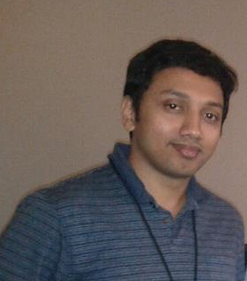
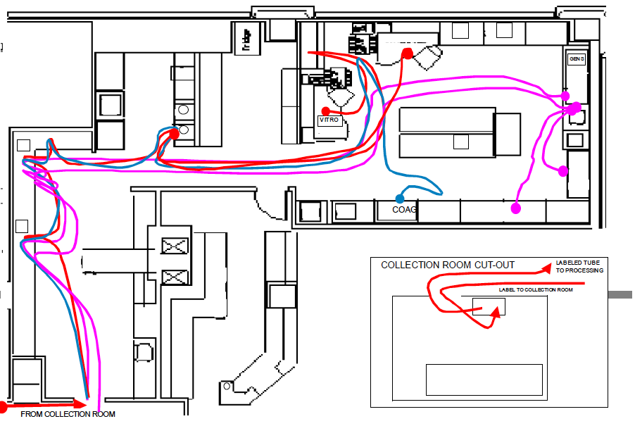
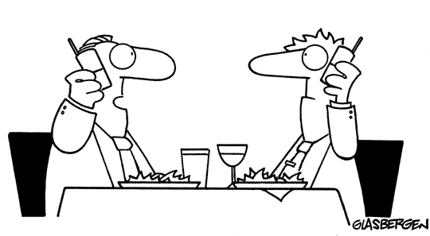
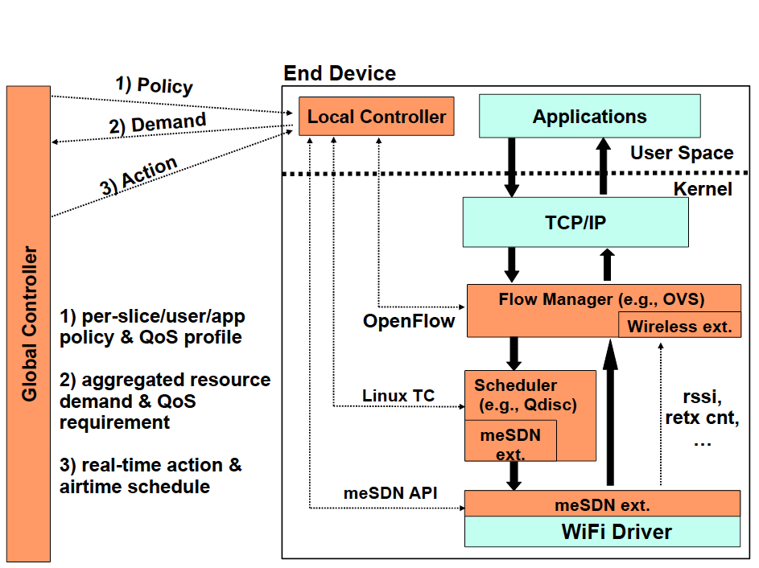
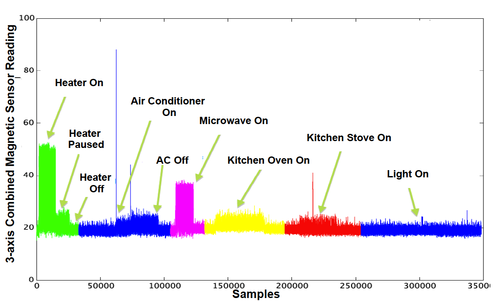
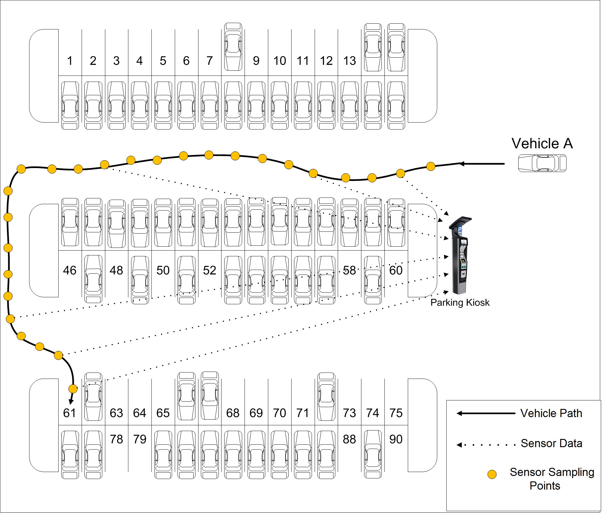
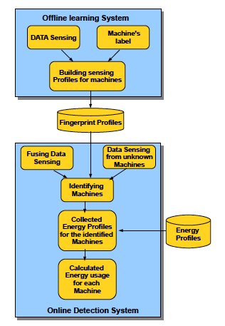

<!DOCTYPE html PUBLIC "-//W3C//DTD XHTML 1.0 Transitional//EN"
    "http://www.w3.org/TR/xhtml1/DTD/xhtml1-transitional.dtd">
<html xmlns="http://www.w3.org/1999/xhtml"
  xmlns:dc="http://purl.org/dc/elements/1.1/"
  xmlns:cc="http://web.resource.org/cc/"
  xmlns:foaf="http://xmlns.com/foaf/0.1/"
  xml:lang="en" lang="en">
<head>
	<meta name="google-site-verification" content="pE3gnd6M4RbKIiB2Sf2fT5ddn6o9w7wqMHNzAWaNGgU" />
	<meta name="description" content="homepage of Mostafa Uddin, homepage of Mostafa Uddin">
	<title>Mostafa Uddin</title>
	<style type="text/css">
	<!--
		@import url(style.css);
	-->
	</style>
</head>


<body alink="#ff9900" bgcolor="#ffffff" link="#003399" text="#333333" vlink="#009933">


<div class="callout">
<a href="mepic.jpg"></a>
</div>


<div class="container">

<p align="center"><h2 align="left">Mostafa Uddin</h2> <font color="#FFFFFF">( Mostafa Uddin )</font color></p>
</p>
<p align="left">
 <A        href="https://mostafau.github.io"><b>Home</b></A> |
  <A        href="https://mostafau.github.io/#experience"><b>Work experience</b></A> |
 <A        href="https://mostafau.github.io/#Patent"><b>Patent</b></A> |
 <A        href="https://mostafau.github.io/#publication"><b>Publication</b></A> |
 <A        href="https://mostafau.github.io/#projects"><b>Projects</b></A> |
 <A        href="https://mostafau.github.io/#award"><b>Award</b></A> |
<A        href="http://mostafau.github.io/#contact"><b>Contact</b></A> | 
<a href="CV.pdf"><b>CV/Resume</b></a>| 


</p>

<br />

<div id="me" about="#me">
<p property="foaf:plan">
</p>

</div>

<h2> About Me </h2>
<p align="left">
I have almost 5 years of working experience in research industry. Throughout my research career I have published over 25 peer-reviewed articles both in IEEE/ACM. I have filed 8 patents. My research interest spans in various areas of Mobile Computing , Wireless Network , Data Center Network , Network Security , and IoT. I am specially interested in developing algorithms and building real-world systems. In developing such systems and applications, I address research challenges in the direction of energy efficiency, bandwidth improvement, ensuring E2E QoS, user's mobility, network security etc. Currently, I am really interested in Mobile Augmented Reality (MAR) and Machine Learning (ML) systems at the edge for the application of industrial automation and security. 
</p>


<A  id=experience name=experience></A>
<h3> Summary of Work Experience</h3>
<ul>
<li><b>Nokia Bell Labs </b>, Holmdel, NJ, USA (June 2016-Present)<br>
As a Network System Researcher.
<br><br>
<li><b>Old Dominion University</b>, Norfolk, VA, USA  (August 2011 - May 2016)<br>
As a Research Assistant in <a href="http://swimsys.cs.odu.edu/">SWiMSys</a> Lab.
<br><br>
<li><b> Bell Labs, Alcatel-lucent</b>, Murray Hill, NJ, USA (June 2015 -  August 2015)<br>
As a Research Scientist Intern in Network, Algorithms, Protocols & Security program. <br><br>
<li><b> Hewlett-Packard Labs</b>, Palo Alto, CA, USA (July 2014 -  August 2014)<br>
As a Research Associate Intern in the Networking and Mobility Lab. <br><br>
<li><b> Hewlett-Packard Labs</b>, Palo Alto, CA, USA (May 2013 -  August 2013)<br>
As a Research Associate Intern in the Networking and Mobility Lab. <br><br>
<li><b>Old Dominion University</b>, Norfolk, VA, USA  (August 2011 - Present)<br>
As a Teaching Assistant in Computer Science Department.
<br><br>
<li> <b>KAZ Software, Dhaka, Bangladesh </b> (February 2008 -  August 2009)<br>
As a Senior Software Engineer in <a href="">KAZ Software</a><br><br>
<li> <b>Structured Data System Limited, Dhaka, Bangladesh </b> (November 2006 -  February 2008)<br>
As a Software Engineer in <a href="http://www.sdslbd.com/">SDSL</a><br><br>
</ul>

<A  id=Patent name=Patent></A>
<h3>Patents and Invention Disclosures</h3>
<ul>
<li><a href="http://www.google.com/patents/WO2015065422A1?cl=en"><b>Wireless Software Defined Network</b></a><br>
Jung Gun Lee,  Mostafa Abdulla Zahid Uddin, Jean Tourrilhes, Souvik Sen, Manfred R Amdt<br>
Patent number WO2015065422 A1, Publication Date: 2015/7, Patent Office: US
<br><br>
<li><b>SMILE -Towards Smarter Network Edges for Next Generation Networks</b><br>
Mostafa Uddin, Tamer Nadeem<br>
Filling Date Oct, 2015
<br><br>
</ul>


<A  id=publication name=publication></A>
<h3>Publications</h3>
<h4>Papers</h4>
<ul>

<li> <b><a href="./ICNP2017.pdf">SDN-based Service Automation for IoT</a>(acceptance rate 18.6% = 39/209 )</b><br>
Mostafa Uddin, Sarit Mukherjee, Hyunseok Chang, and T. V Lakshman 
<br>
<a href="http://iqua.ece.toronto.edu/icnp17/program.html">IEEE ICNP 2017</a>.
<br><br>
<li> <b><a href="./Smartcity2017.pdf">BLESS: Bluetooth Low Energy Service Switching using SDN</a> (acceptance rate 33% )</b><br>
Mostafa Uddin, Sarit Mukherjee, Hyunseok Chang, and T. V Lakshman 
<br>
<a href="http://infocom2017.ieee-infocom.org/workshop/smartcity-smart-cities-and-urban-computing/program">IEEE SmartCity 2017</a>.
<br><br>

<li> <b><a href="./SEC2016.pdf">EdgeEye: Fine Grained Traffic Visibility at Wireless Network Edge</a></b><br>
Mostafa Uddin, Ibrahim Ben Mustafa, and Tamer Nadeem
<br>
<a href="http://acm-ieee-sec.org/2016/">IEEE/ACM Symposium on Edge Computing 2016</a>.
<br><br>

<li> <b><a href="./MASS2016.pdf">TrafficVision: A Case for Pushing Software Defined Networks to Wireless Edges</a>(acceptance rate 27% )</b><br>
Mostafa Uddin,  and Tamer Nadeem
<br>
<a href="http://www.ene.unb.br/mass2016/">IEEE MASS 2016</a>.
<br><br>


<li> <b><a href="./Winmee.pdf">Understanding the Intermittent Traffic Pattern of HTTP Video Streaming over Wireless Networks</a></b><br>
Ibrahim Ben Mustafa, Mostafa Uddin,  and Tamer Nadeem
<br>
<a href="http://www.wi-opt.org/winmee.html">IEEE WINMEE 2016</a>.
<br><br>


<li> <b><a href="./WearSys.pdf">Wearable Sensing Framework for Human Activity
Monitoring</a></b><br>
Mostafa Uddin, Ahmed Salem, Ilho Nam, and Tamer Nadeem
<br>
<a href="https://sites.google.com/site/wearsys2015/home">ACM WearSys'15</a>.
<br><br>


<li> <b><a href="./INFOCOM2015.pdf">Harmony: Content Resolution using Acoustic Channel. </a> (acceptance rate 19% = 316/1640 ) </b><br>
 Mostafa Uddin, and Tamer Nadeem 
<br>
<a href="http://infocom2015.ieee-infocom.org/">IEEE INFOCOM 2015</a>.
<br><br>


<li> <b><a href="./meSDN-MCS2014.pdf"> meSDN: mobile extension of SDN</a></b> <br>
Jeongkeun Lee, Mostafa Uddin, JeanTourrilhes, Souvik Sen, Sujata Banerjee, Manfred Arndt, Kyu-Han Kim, Tamer Nadeem
<br>
<a href="http://synergy.cs.cmu.edu/MCS2014/Home.html">ACM MCS 2014</a>.
<br><br>


<li> <b> <a href="./SECON2014.pdf">SpyLoc: A Light Weight Localization System for Smartphones.</a>(acceptance rate 19.8% = 68/342)</b><br>
Mostafa Uddin and Tamer Nadeem
<br>
<a href="http://secon2014.ieee-secon.org/">IEEE SECON 2014</a>.
<br><br>


<li> <a href="./BHI_paper.pdf"><b> SmartSpaghetti: Accurate and Robust Tracking of Human's Location </b></a> <br>
Mostafa Uddin, Ajay Gupta, Kurt Maly, Tamer Nadeem, Sandip Godambe, Arno Zaritsky <br>
<a href="http://bhi.embs.org/2014/"> IEEE-EMBS International Conferences on Biomedical and Health Informatics, 2014</a>
<br><br>


<li> <a href="./chkd_paper_final.pdf"><b> SmartSpaghetti: Use of Smart Devices to Solve Health Care Problems </b></a> (Full Paper acceptance rate=18%)<br>
Mostafa Uddin, Ajay Gupta, Kurt Maly, Tamer Nadeem, Sandip Godambe, and Arno Zaritsky <br>
<a href="http://web.missouri.edu/~yooil/Workshop/BHI2013/">International Workshop on Biomedical and Health Informatics, 2013</a>
<br><br>

<li> <b><a href="./PerCom13.pdf"> RF-Beep: A light ranging scheme for smart devices </a>(acceptance rate 11.2% = 19/170(full paper), 15.9% = 27/170(total))</b><br>
Mostafa Uddin and Tamer Nadeem
<br>
<a href="http://www.percom.org/">IEEE PerCom 2013</a>.
<br><br>
<li><b><a href="./hotmobile13.pdf">
A2PSM: Audio Assisted Wi-Fi Power Saving
Mechanism for Smart Devices</a>(acceptance rate 31.5% = 17/54)</b>
<br>
Mostafa Uddin and Tamer Nadeem
<br>
<a href="http://www.hotmobile.org/2013/">ACM HotMobile 2013</a>.
<br><br>
<li><b>
<a href="./homeSys_final1.pdf">
MagnoTricorder: What You Need To Do Before Leaving Home</a></b>
<br>
Mostafa Uddin and Tamer Nadeem
<br>
<a href="https://sites.google.com/site/homesys2012/">ACM HomeSys, UbiComp 2012</a>
<br><br>
<li><b>
<a href="./IWCMC2012.pdf">
EnergySniffer: Home Energy Monitoring System
using Smart Phones</a> [<a href="./EnergySniffer_IWCMC.pdf">Slide</a>]</b>
<br>
Mostafa Uddin and Tamer Nadeem 
<br/>
<a href="http://iwcmc.org/2012/"> IEEE IWCMC, 2012</a>.
<br><br>


</ul>


<h4>PHD Thesis</h4>
<ul>
<li><b>
<a href="http://digitalcommons.odu.edu/cgi/viewcontent.cgi?article=1016&context=computerscience_etds">Toward open and programmable wireless network edge</a></b>
<br>
Mostafa Uddin, Old Dominion University, 2016. 
<br><br>
</ul>

<h4>Article</h4>
<ul>
<li><b>
<a href="./Hotmobile12.pdf">Report of HotMobile 2012 </a></b>
<br>
Igor Pernek, Mostafa Uddin and Jack Fernando Bravo Torres 
<br/>
<a href="http://www.computer.org/portal/web/computingnow/pervasivecomputing">IEEE Pervasive Computing</a>.
<br><br>
<li> <b> <a href="./HotMobile12poster.pdf"> HotMobile 2012 Poster: MachineSense: Detecting and
Monitoring Active Machines using Smart Phone </a></b>
<br>
Mostafa Uddin and Tamer Nadeem
<br/>
<a href="http://www.sigmobile.org/pubs/mc2r/"> ACM SIGMOBILE MC2R</a>.
<br><br>
<li> <b> <a href="./HotMobile12demo.pdf"> HotMobile 2012 Poster: Audio-WiFi: Audio Channel
Assisted WiFi Network for Smart Phones </a></b>
<br>
Mostafa Uddin and Tamer Nadeem
<br/>
<a href="http://www.sigmobile.org/pubs/mc2r/"> ACM SIGMOBILE MC2R</a>.
<br><br>
</ul>


<h4>Demo/Posters/Talk</h4>

<ul>


<li> <b><a href="./SMILE_Poster_final.pdf">Extending SDN to Cellular Network End Devices</a>[Demo]</b>,<br>
 Ibrahim Ben Mustafa, Mostafa Uddin, and Tamer Nadeem . AT&T Research Academic Summit 2016
<br><br>


<li> <b><a href="./HotMobile_poster_2015.pdf">SafeWLAN: A WLAN-based SDN Approach for Securing WLAN Traffic</a>[Poster]</b><br>
 Mostafa Uddin, Ashish Kshirsagar, and Tamer Nadeem. HotMobile 2015 
<br><br>

<li> <b><a href="./PhD_gathering.pdf">meSDN: Mobile Extension of
SDN</a>[Talk]</b><br>
PhD Gathering talk at Computer Science Department, ODU.
<br><br>

<li> <b><a href="./weSDN_intern_talk_1.pdf">weSDN: SDN Extends to Wireless End
Devices</a>[Talk]</b><br>
Presentation in HP Lab, Palo Alto, CA.
<br><br>


<li> <b><a href="http://dl.acm.org/citation.cfm?id=2504581">SpyLoc: a Light Weight Localization System for Smartphones</a> </b><a href="./MobiCom_poster.pdf">[Poster]</a><a href="./MobiCom_SRC_Poster.pdf">[SRC Presentation]</a><br>Mostafa Uddin and Tamer Nadeem <br> 
<a href="http://www.sigmobile.org/mobicom/2013/program.html">In Proceedings of MobiCom'13</a>
<br><br>


<li><b>
<a href="./meSDN_poster.pdf">Extending SDN for mobile device</a>[Poster]</b>
<br>
Jeongkeun Lee, Mostafa Uddin, Jean Tourrilhes, Souvik Sen, Sujata Banerjee,Manfred Arndt, Tamer Nadeem
<br>
<a href="http://www.hotmobile.org/2014/">ACM HotMobile, 2014 </a>.
<br><br>


<li><b>
<a href="./INFOCOMM_demo.pdf">Audio-WiFi: Audio Channel Assisted WiFi Network for Smart Phones</a>[Demo]</b>
<br>
Mostafa Uddin and Tamer Nadeem
<br>
<a href="http://www.ieee-infocom.org/2012/demos.html">IEEE INFOCOM, 2012 </a>.
<br><br>
<li><b>
<a href="./INFOCOMM_poster.pdf">EnergySniffer: Home Energy Monitoring System
using Smart Phones</a>[Poster]</b>
<br>
Mostafa Uddin and Tamer Nadeem
<br>
<a href="http://www.ieee-infocom.org/2012/">IEEE INFOCOM, 2012 </a>.
<br><br>
<li><b>
<a href="./HotMobile_poster.pdf">MachineSense: Detecting and Monitoring Active Machines using Smart Phones</a>[Poster]</b>
<br>
Mostafa Uddin and Tamer Nadeem
<br>
<a href="http://www.hotmobile.org/2012/">ACM HotMobile, 2012 </a>.
<br><br>
<li><b>
<a href="./DC_presentation.pdf">Audio-WiFi: Augmented WiFi
Network with Audio Channel for
Smart Devices</a>[Talk]</b>
<br>
Mostafa Uddin
<br>
<a href="http://www.hotmobile.org/2012/">ACM HotMobile, 2012 </a>.
<br><br>

</ul>

<A  id=project name=projects></A>
<h2>Research Projects</h2>
<ul>

<div class="callout">
<a href="CHKD.png"></a>
</div>
<div align="left">

<b>CHKD Project:</b>Mobile devices such as smart phones have a number of sensors that can be exploited to solve a number
of problems in health care delivery. In this project we use accelerometer, gyroscope, and compass
sensors to solve a location tracking problem common to many emergency departments. An emergency
department is not friendly to be visually surveyed, layout consists of many isolated islands, and
workstation layout is not standardized. An automated tool to create spaghetti diagrams of movements
of personnel in a non-intrusive way is the problem we are reporting in this project. A preliminary
prototype shows very encouraging results of producing paths. We also identify challenges and our
approach to meet them.    
</div>
<br/>
<br/>
<br/>
<br/>
<div class="callout">
<a href="Audio-WiFi.png"></a>
</div>
<div align="left">

<b>Audio-WiFi Project:</b> Wi-Fi is becoming widely popular network interface for data communication in smart devices. However,
the Wi-Fi network still has several inefficiencies in terms
of high energy consumption, unfairness between co-located
nodes, and bandwidth poor utilization. In this project we like to address these issues of the Wi-Fi network by integrating the
mic/speaker of the smart phones as a parallel communication
channel. Our idea is to propose a novel framework of
communication using mic/speaker in order to develop a more
efficient Wi-Fi network communication for smart devices. The non-interferential
nature with Wi-Fi network and low power consumption is the biggest advantage of using
audio communication channel in parallel with WiFi. On the other hand, slow propagation and low data rate of the acoustic channel are some biggest challenges we are addressing in order to implement the Audio-WiFi framework.     
</div>
<br/>
<br/>


<div class="callout">
<a href="meSDN_arch.png"></a>
</div>
<div align="left">

<b>meSDN:Mobile Extension of SDN</b> Now-a-days large number of mobile devices use numerous apps that access internet through wireless. With such significant amount of traffic growth and variability, it is now necessary to have greater visibility and control over the traffic generated from the client devices, such that we can ensure performance guarantees to multiple types of users on a shared network infrastructure. In a wired infrastructure, network virtualization is a means to deliver such performance guarantees using Software-Defined Networking (SDN) APIs do dynamically coordinate network edges (e.g. routers, switch etc.); we don't need to change the client device behavior because the last hop between the network edge and the wired end device is an isolated full-duplex point-to-point link, e.g., Ethernet. However, this is not the case with wireless LANs (WLAN) as the last hop between the mobile device and the access points is shared medium. Moreover the current WiFi MAC protocol does not allow edge access points (APs) to control client uplink transmissions and their 802.11 quality of service (QoS) settings. Therefore, we argue that the SDN framework needs to be extended to the client devices to realize services such as WLAN virtualization with end-to-end QoS, and we propose a framework called msSDN. We show that meSDN also improves application-awareness and power-efficiency from our prototype on Android phones.
<p> <b>NB: This is a collaboration work with HP Labs</b>      
</div>
<br/>
<br/>
<div class="callout">
<a href="MagnoTri.png"></a>
</div>
<div align="left">
<b>MagnoTricorder:</b> Smart Home is becoming a hot area of research for both academic and industrial researchers. In Smart Home, sensing the status of home devices (e.g., home appliances) is a corner stone for having better control over the home appliances as well as power consumption. In this project we present the design and the evaluation of a framework MagnoTricorder, a system that utilizes the magnetic sensor in smartphones to detect the running devices at home thru a singlepoint sensing. MagnoTricorder leverages the effect of Electro Magnetic Interference (EMI) generated by the AC current in the main power-line at home. This EMI induces a magnetic Þeld that highly þuctuates the reading of the magnetic sensor in smartphones. In this project, we utilize this characteristic for detecting and identifying the running devices at home thru the Circuit Breaker Panel.
</div>

<br/><br/><br/>

<div class="callout">
<a href="ParkZoom.png"></a>
</div>
<div align="left">
<b>ParkZoom:</b> Accurate localization in outdoor and indoor spaces
is a challenging task. The widely used GPS is not designed
for high accuracy applications and yields accuracy levels not
sufficient for lane or spot level localization. In addition, errors
from inertial sensors accumulate with time due to integration
drift. We introduce a smartphone based, infrastructure aided
parking localization system called ParkZoom for estimating
(zooming into) the precise parking spot location of a vehicle
during traversal in both indoor and outdoor parking lots.
On the vehicle side, the proposed method utilizes conventional
smartphones for generating and transferring continuous sensor
data, such as accelerometer, gyroscope, and compass readings.
On the infrastructure side, ParkZoom employs statistical
learning of sensor data signatures, pattern classification of
data, constraint propagation and error correction for accurate
parking spot identification. 
<p> <b> NB: This is a collaboration project with Siemens Corporate Research</b> 
</div>

<br/><br/><br/>


<div class="callout">
<a href="EnergySniffer.png"></a>
</div>
<b>EnergySniffer:</b> In this project, we propose a simple and flexible energy monitoring system using smart phones. We call our system EnergySniffer in which it exploits various sensors, such as magnetic sensor, light, microphone, temperature, camera, WiFi, in smart phones to detect and monitor operating machines in its vicinity. The advantages of EnergySniffer system can be summarized as follow: First, it monitors energy consumption for each individual machine. Second, it has very low overhead and also no new hardware is needed to install or maintain. Third, very flexible in updating software and deploying new services using the application updating feature of the smart phones' application markets. Using the sensors in smart phones to monitor the energy consumption by machines is an eccentric way to approach the problem. Our final objective is to fuse the data from multiple sensors in phone to build a multi sensing framework to generate a unique fingerprint profile for each machine. Later, we apply a machine learning method using fingerprint profiles to recognize and monitor operating machines. In addition to that, this system will also communicate with the Energy Profile of the identiÞed machine to finally calculate the actual energy consumption.
<br/><br/><br/><br/>

<!--<li><b>Siemens-ODU iLocate Project:</b>-->

<br/>

</ul>


<A  id=award name=award></A>
<h3>Awards</h3>
<ul>
<li> Travel grant award from SIGMOBILE for attending HotMobile 2014, santa barbara, CA.
<li> Microsoft Research "ACM SRC" Grant Recipient for MobiCom 2013, Miami, FL. 
<li> NSF Student Travel Grant Recipient for MobiCom 2013, Miami, FL. 
<li> Outstanding RA (fall 2012) - Computer Science Department.
<li> NSF Student Travel Grant Award for attending PerCom 2013. 
<li> Travel Grant Award from SIGMOBILE for attending HotMobile 2013.
<li> Travel  grant for attending HotMobile 2012, INFOCOM 2012, Ubicomp2012 from CS Dept. of ODU.
<li>Dominion Graduate Scholar offered by College of Sciences ODU.
<br/>
<li> Dean's List Scholarship during undergraduate studies at BUET.
<br/>
</ul>
<br/>
<A id=course></A>
<h3>Courses</h3>
<ul>
<li> Algorithms and Data Structures, Instructor: Dr. Desh Ranjan
<li> Design of Network Protocols, Instructor: Dr. Hussein M. Abdel-Wahab
<li> Cyber Physical Systems Seminar, Instructor: Dr. Tamer Nadeem
<li> Wireless Networked Systems, Instructor: Dr. Tamer Nadeem
<li> Machine Learning, Instructor: Dr. Shuiwang Ji  
<li> Network and Application Security, Instructor: Dr. Ravi Mukkamala
<li> App development for Smart Devices, Instructor: Dr. Tamer Nadeem
<li>  Wireless Communication and Mobile Computing, Instructor: Dr. Tamer Nadeem
<li>  Wireless Communication Network, Instructor: Dr. Dimitrie C Popescu
<li>  Queueing Theory, Instructor:Dr. Stephan Olariu
<li>  Data mining, Instructor:  Dr. Ravi Mukkamala
<li>  Information visualization, Instructor: Dr. Michele Weigle
<li> Sensor Networks, Instructor:Dr. Stephan Olariu 
</ul>
<br/>


<A id=TA name=TA></A>
<h3>Teaching Assistant</h3>
<ul>
<li>Fall 2011:  <a href="http://www.cs.odu.edu/~rgupta/cs300/">CS300 - Computers in Society </a>
<li> Spring 2012: <a href="http://www.cs.odu.edu/~cs250/"> CS250-Programming and Problem Solving II </a>
<li> Fall2012: <a href="http://www.cs.odu.edu/~cs495/">CS495/595-App Development for Smart Devices </a>
</ul>
<br/>


<A  id=contact name=contact></A>
<h3>Contact Information</h3>
<br>
Department of Computer Science
<br/>
E&CS Room 3106A<br>
Norfolk, VA 02139<br>
Phone: (757) 683-7761<br/>


<br clear="all" />

<div class="footer">
Mostafa Uddin <font color=#FFFFFF>( Mostafa Uddin )</font color>
<br>
(<a rel="dc:creator" property="foaf:mbox" href="mailto:muddin@cs.odu.edu">muddin@cs.odu.edu</a>)<br />
</div>
<hr />

<!-- Counter Code START --><a href="http://www.e-zeeinternet.com/" target="_blank"></a><br><a href="http://www.e-zeeinternet.com/" title="Hit Counter" target="_blank" style="font-family: Geneva, Arial, Helvetica, sans-serif; font-size: 10px; color: #000000; text-decoration: none;">Hit Counter</a><!-- Counter Code END -->

</body>
</html>

